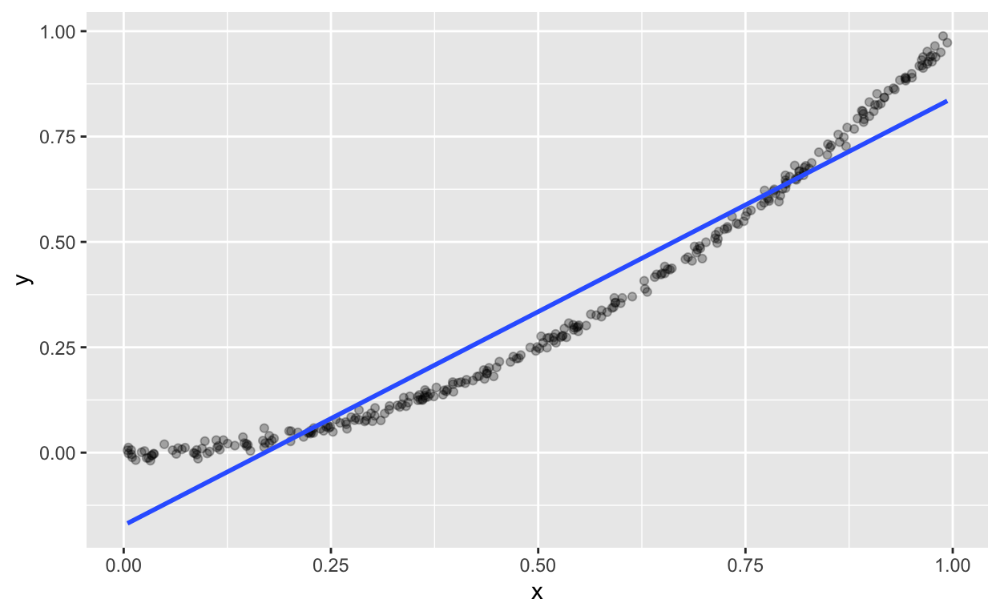
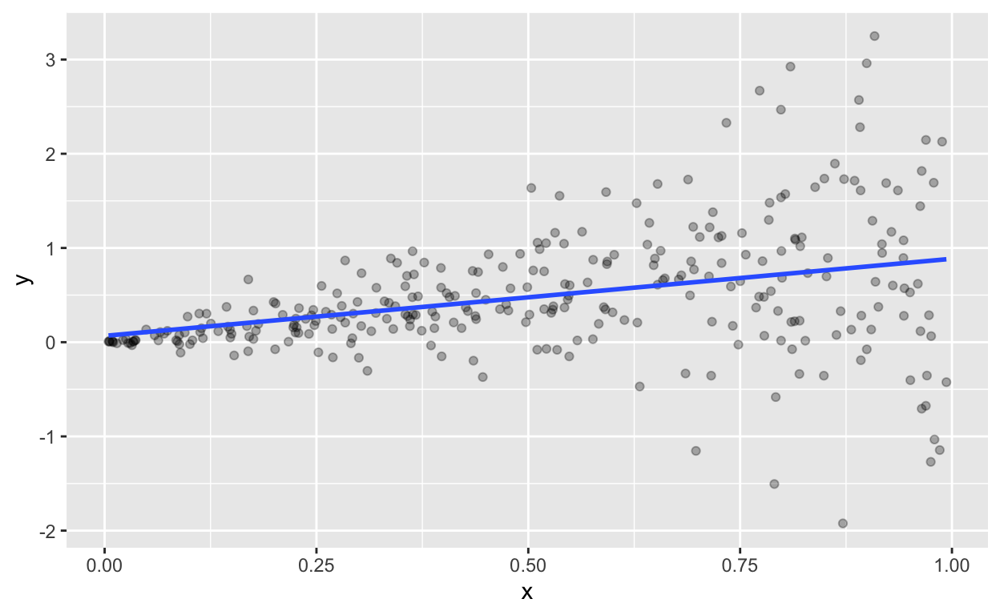
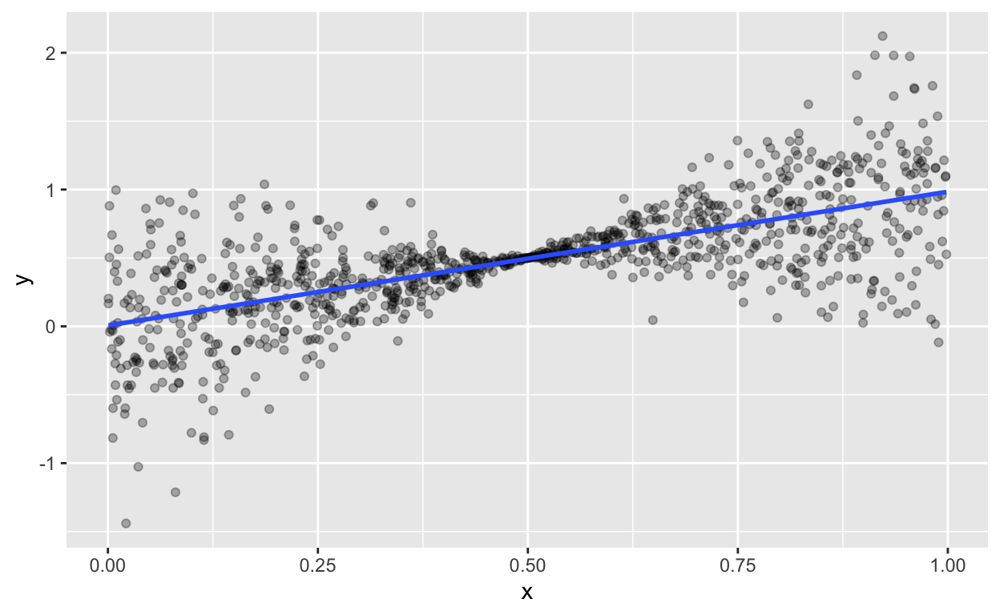
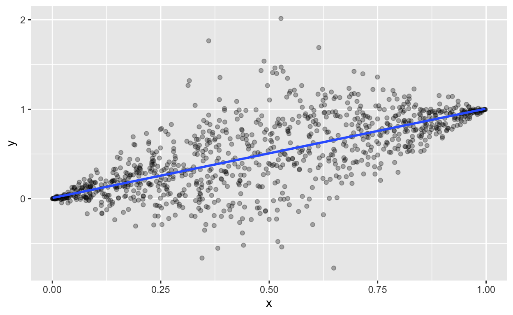

Being wrong in the right way. With R excerpts.
Traditional linear models, such as the output of the R function lm(), are
often loaded with a set of strong assumptions. Take univariate regression:
\[ Y = q+mX+\varepsilon. \tag{1} \] This equation assumes that:
The last assumption is satisfied in many practical situations, and we will take it here for granted2. What happens when the first three assumptions are violated (that is “frequently” to “almost always”, depending on context)?
A comprehensive discussion is provided by (Buja et al. 2019). These authors show that:
If the conditional mean \(\mathbb E (Y \vert X)\) is not linear (“first order misspecification”), then the Ordinary Least Squares (OLS) regression coefficients \(\hat \beta\) consistently estimate: \[ \beta \equiv \text{arg } \min _{\beta^\prime} \mathbb E((Y-X\beta^\prime)^2) \tag{2} \] which can be thought as the “best linear approximation of the response”3.
Both non-linearity in the sense of the previous point, and \(X\)-dependence in \(\mathbb{V}(Y \vert X)\) (“second order misspecification”) affect the sampling distribution of \(\hat \beta\) and, in particular, \(\mathbb{V}(\hat \beta)\), which is the relevant quantity for inference in the large-sample limit.
Both problems can be efficiently addressed through the so-called “sandwich” estimators for the covariance matrix of \(\hat \beta\) (White 1980), that are asymptotically consistent in the large sample limit.
Details can be found in the mentioned reference. The rest of the post
illustrates with examples how to compute “sandwich” estimates in R, and why
you may want to do so.
The {sandwich} package
(available on CRAN) provides estimators for the regression coefficients’
variance-covariance matrix \(\mathbb V (\hat \beta)\) that are robust to first
and second order misspecification. These can be readily used with lm objects,
as in the example below:
fit <- lm(mpg ~ wt, data = mtcars)
stats::vcov(fit) # standard vcov (linear model trusting estimate) (Intercept) wt
(Intercept) 3.525484 -1.005693
wt -1.005693 0.312594sandwich::vcovHC(fit) # sandwich vcov (model-robust estimate) (Intercept) wt
(Intercept) 5.889249 -1.7418581
wt -1.741858 0.5448011It is important to note that both functions stats::vcov() and
sandwich::vcovHC() employ the same point estimates of regression coefficients
to compute \(\mathbb V (\hat \beta)\):
fit
Call:
lm(formula = mpg ~ wt, data = mtcars)
Coefficients:
(Intercept) wt
37.285 -5.344 The difference between these functions lies in the different assumptions they make on the linear model residuals, which leads to different estimates for \(\mathbb{V}(\hat \beta)\).
This section illustrates some consequences of model misspecification through simulation. The examples use:
For convenience, we define some helpers to be used in the following examples. The function below returns random generators for the generic additive error model \(Y = f(X) + \varepsilon\), where the distribution of the noise term \(\varepsilon\) may in general depend on \(X\). Both \(X\) and \(Y\) are assumed here and below to be 1-dimensional.
rxy_fun <- function(rx, f, reps) {
res <- function(n) {
x <- rx(n) # X has marginal distribution 'rx'
y <- f(x) + reps(x) # Y has conditional mean 'f(x)' and noise 'reps(x)'
return(tibble(x = x, y = y))
}
return(structure(res, class = "rxy"))
}
plot.rxy <- function(x, N = 1000, seed = 840) {
set.seed(seed)
ggplot(data = x(N), aes(x = x, y = y)) +
geom_point(alpha = 0.3) +
geom_smooth(method = "lm", se = FALSE)
}The following function simulates fitting the linear model y ~ x over multiple
datasets generated according to a function rxy().
lmsim <- function(rxy, N = 100, vcov = stats::vcov, B = 1e3, seed = 840)
{
set.seed(seed)
res <- list(coef = matrix(nrow = B, ncol = 2), vcov = vector("list", B))
colnames(res$coef) <- c("(Intercept)", "x")
class(res) <- "lmsim"
for (b in 1:B) {
.fit <- lm(y ~ ., data = rxy(N))
res$coef[b, ] <- coef(.fit) # Store intercept and slope in B x 2 matrix
res$vcov[[b]] <- vcov(.fit) # Store vcov estimates in length B list.
}
return(res)
}
print.lmsim <- function(x)
{
cat("Simulation results:\n\n")
cat("* Model-trusting vcov (average of vcov estimates):\n")
print( avg_est_vcov <- Reduce("+", x$vcov) / length(x$vcov) )
cat("\n* Simulation-based vcov (vcov of coefficient estimates):\n")
print( emp_vcov <- cov(x$coef))
cat("\n* Ratio (1st / 2nd):\n")
print( avg_est_vcov / emp_vcov )
return(invisible(x))
}The print method defined above shows a comparison of the covariance matrices obtained by:
The first one can be considered a “model-trusting” estimate (where the actual
“model” is specified by the vcov argument of lmsim(), i.e. stats::vcov and
sandwich::vcovHC for the traditional and sandwich estimates, respectively).
The second one is a model-free simulation-based estimate of the true
\(\mathbb{V}(\hat \beta)\). The comparison between the two4
provides a measure of the bias of the model-trusting estimate.
In this model, \(\mathbb E (Y \vert X)\) is not linear in \(X\) (first order misspecification), but the remaining assumptions of the linear model hold. This is how a typical linear fit of data generated from this model looks like:
plot(rxy_01, N = 300)
Here the effect of misspecification on the variance-covariance model trusting estimates is to underestimate true covariance values (by a factor as large as 40%!):
lmsim(rxy_01)Simulation results:
* Model-trusting vcov (average of vcov estimates):
(Intercept) x
(Intercept) 0.0002277348 -0.0003417356
x -0.0003417356 0.0006833282
* Simulation-based vcov (vcov of coefficient estimates):
(Intercept) x
(Intercept) 0.0003367876 -0.0005662584
x -0.0005662584 0.0011488351
* Ratio (1st / 2nd):
(Intercept) x
(Intercept) 0.6761971 0.6034976
x 0.6034976 0.5948009This is fixed by the sandwich::vcovHC() estimators:
lmsim(rxy_01, vcov = sandwich::vcovHC)Simulation results:
* Model-trusting vcov (average of vcov estimates):
(Intercept) x
(Intercept) 0.0003475834 -0.0005732957
x -0.0005732957 0.0011443449
* Simulation-based vcov (vcov of coefficient estimates):
(Intercept) x
(Intercept) 0.0003367876 -0.0005662584
x -0.0005662584 0.0011488351
* Ratio (1st / 2nd):
(Intercept) x
(Intercept) 1.032055 1.0124276
x 1.012428 0.9960916rxy_02 <- rxy_fun(
rx = runif,
f = \(x) x,
reps = \(x) rnorm(length(x), sd = x)
)
plot(rxy_02, N = 300)
This model is first-order consistent, but second-order misspecified (variance is not independent of \(X\)). The effects on vcov model-trusting estimates is mixed: some covariances are underestimated, some are overestimated.
lmsim(rxy_02)Simulation results:
* Model-trusting vcov (average of vcov estimates):
(Intercept) x
(Intercept) 0.01344466 -0.02014604
x -0.02014604 0.04008595
* Simulation-based vcov (vcov of coefficient estimates):
(Intercept) x
(Intercept) 0.005456494 -0.01417346
x -0.014173461 0.04834196
* Ratio (1st / 2nd):
(Intercept) x
(Intercept) 2.463974 1.4213920
x 1.421392 0.8292164Again, the sandwich estimator provides unbiased covariance estimates:
lmsim(rxy_02, vcov = sandwich::vcovHC)Simulation results:
* Model-trusting vcov (average of vcov estimates):
(Intercept) x
(Intercept) 0.005637138 -0.01451506
x -0.014515056 0.04909868
* Simulation-based vcov (vcov of coefficient estimates):
(Intercept) x
(Intercept) 0.005456494 -0.01417346
x -0.014173461 0.04834196
* Ratio (1st / 2nd):
(Intercept) x
(Intercept) 1.033106 1.024101
x 1.024101 1.015653The sandwich estimators are only asymptotically unbiased (in the large sample limit). For instance, in our previous Example 1, the sandwich covariance estimates require sample sizes of \(N \approx 50\) or larger, in order for their bias to be relatively contained (\(\lesssim 10\%\)). With a small sample size:
lmsim(rxy_01, N = 10, vcov = sandwich::vcovHC)Simulation results:
* Model-trusting vcov (average of vcov estimates):
(Intercept) x
(Intercept) 0.008253143 -0.01356350
x -0.013563503 0.02691423
* Simulation-based vcov (vcov of coefficient estimates):
(Intercept) x
(Intercept) 0.005084963 -0.008573385
x -0.008573385 0.017136158
* Ratio (1st / 2nd):
(Intercept) x
(Intercept) 1.623049 1.582048
x 1.582048 1.570611According to the heuristics of (Buja et al. 2019), the linear model trusting variances \(\mathbb V (\hat \beta)_{ii}\) tend to underestimate (overestimate) the true variances:
We illustrate the second case. Consider the following two models:
\[ Y = X + \varepsilon,\quad X \sim \text{Unif} (0,1),\qquad \varepsilon \sim \mathcal N (0,\vert X-\frac{1}{2}\vert ) \]rxy_04a <- rxy_fun(
rx = runif,
f = \(x) x,
reps = \(x) rnorm(length(x), sd = abs(0.5 - x))
)
plot(rxy_04a)
rxy_04b <- rxy_fun(
rx = runif,
f = \(x) x,
reps = \(x) rnorm(length(x), sd = 0.5 - abs(0.5 - x))
)
plot(rxy_04b)
In agreement with the heuristics, we have, for the first model:
lmsim(rxy_04a)Simulation results:
* Model-trusting vcov (average of vcov estimates):
(Intercept) x
(Intercept) 0.003326042 -0.004989057
x -0.004989057 0.009977552
* Simulation-based vcov (vcov of coefficient estimates):
(Intercept) x
(Intercept) 0.005390525 -0.009154439
x -0.009154439 0.018296535
* Ratio (1st / 2nd):
(Intercept) x
(Intercept) 0.6170162 0.5449878
x 0.5449878 0.5453247and, for the second model:
lmsim(rxy_04b)Simulation results:
* Model-trusting vcov (average of vcov estimates):
(Intercept) x
(Intercept) 0.003420946 -0.005150512
x -0.005150512 0.010300847
* Simulation-based vcov (vcov of coefficient estimates):
(Intercept) x
(Intercept) 0.001590907 -0.001503471
x -0.001503471 0.003131620
* Ratio (1st / 2nd):
(Intercept) x
(Intercept) 2.150312 3.425748
x 3.425748 3.289303It is interesting to notice that, far away from the large-sample limit, the sandwich estimates also have a bias (as discussed in the previous example), but the bias leads to an overestimate of \(\mathbb V (\hat \beta)\) in both cases5:
lmsim(rxy_04a, N = 10, vcov = sandwich::vcovHC)Simulation results:
* Model-trusting vcov (average of vcov estimates):
(Intercept) x
(Intercept) 0.07714254 -0.1302820
x -0.13028198 0.2595908
* Simulation-based vcov (vcov of coefficient estimates):
(Intercept) x
(Intercept) 0.05560994 -0.0957307
x -0.09573070 0.1947398
* Ratio (1st / 2nd):
(Intercept) x
(Intercept) 1.387208 1.360922
x 1.360922 1.333013lmsim(rxy_04b, N = 10, vcov = sandwich::vcovHC)Simulation results:
* Model-trusting vcov (average of vcov estimates):
(Intercept) x
(Intercept) 0.05301354 -0.07223407
x -0.07223407 0.13959714
* Simulation-based vcov (vcov of coefficient estimates):
(Intercept) x
(Intercept) 0.02725563 -0.03408101
x -0.03408101 0.06735272
* Ratio (1st / 2nd):
(Intercept) x
(Intercept) 1.945049 2.119481
x 2.119481 2.072628Sandwich estimators provide valid inference for parameter covariances and
standard errors in misspecified linear regression settings.
These model-robust tools are available in R through
{sandwich} (which also provides
methods for more general glm objects).
For fairly large datasets, this model-robust approach can be coupled with data splitting, leading to a modeling procedure which I’m finding to be quite solid and versatile in practice:
This works very well with independent data for which a (generalized) linear model can provide a useful parametric description. Generalizations may be discussed in a separate post.
This is already somewhat implicit in the representation (1), that models \(Y\) and \(X\) as single random variables. The reason for stating this condition in an apparently convoluted way, rather than a simpler “data points \((X_i,Y_i)\) are independent draws from the same joint distribution”, is that this formulation includes cases where the \(X_i\)’s are not independent, cf. the following note.↩︎
There are of course important exceptions, like time series or spatial data. Noteworthy, our formulation of strict linear model assumptions can also cover some cases of temporal or spatial dependence in the regressors \(X_i\), provided that such dependence is not reflected on \(Y_i \vert X_i\).↩︎
According to an \(L_2\) loss criterion.↩︎
I use an element-wise ratio, in order to avoid confusion from the different scales involved in the various entries of \(\mathbb V (\hat \beta)\).↩︎
I don’t know whether this result (that sandwich estimates are, at worst, overestimates) is a general one.↩︎